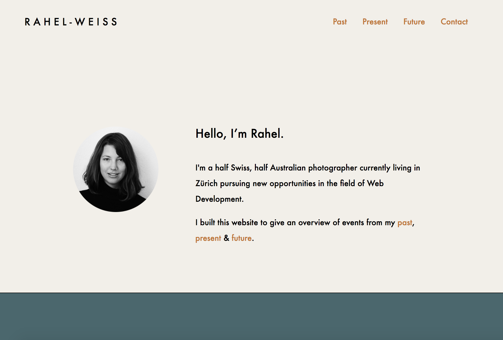

Portfolio
 |
Organic MattersOrganic Matters is a Melbourne based organic waste management solution. Together with the two co-founders we divised a simple website explaining the function of the service to potential clients. |
|  |
CVA digital CV to be used for application of web development positions. The site was structured into segments regarding my past, present and future. |